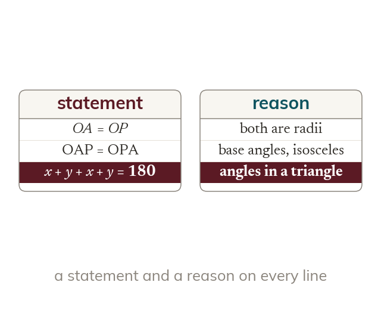

Proving the angle in a semicircle
Join the centre O to P. OA, OP and OB are all radii, so triangles OAP and OBP are isosceles. Use letters for the base angles.
A proof is an argument that works for every case, so it uses letters instead of numbers and a stated reason for every line.
Work down the page at your own pace. Write every answer in your book first, then click to check it.
Read each card, then follow the worked examples one step at a time.
Join the centre O to P. OA, OP and OB are all radii, so triangles OAP and OBP are isosceles. Use letters for the base angles.

Each line is a statement with a reason. The angle sum gives
So angle APB
Pick an answer. If it's wrong, the feedback tells you which mistake it was.
Section Geometric proof Exercise questions that prove angle relationships using circle theorems, isosceles triangles and tangent facts.
Read each card, then follow the worked examples one step at a time.

The proof names the angle at A as and at C as Their centre angles, and reflex make a full turn.

The centre theorem gives centre angles and Angles at a point give
So
Pick an answer. If it's wrong, the feedback tells you which mistake it was.
Section Geometric proof Exercise questions that prove angle relationships in algebraic form, choosing an efficient method.
Finished? Next lesson: 6.6-6.7 Trigonometry and Angles of Any Size.
Log in, then search for a code to practise that skill.